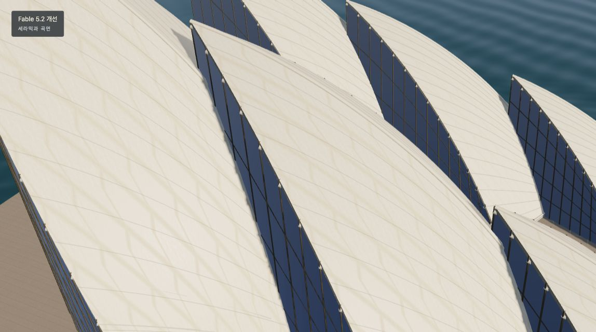
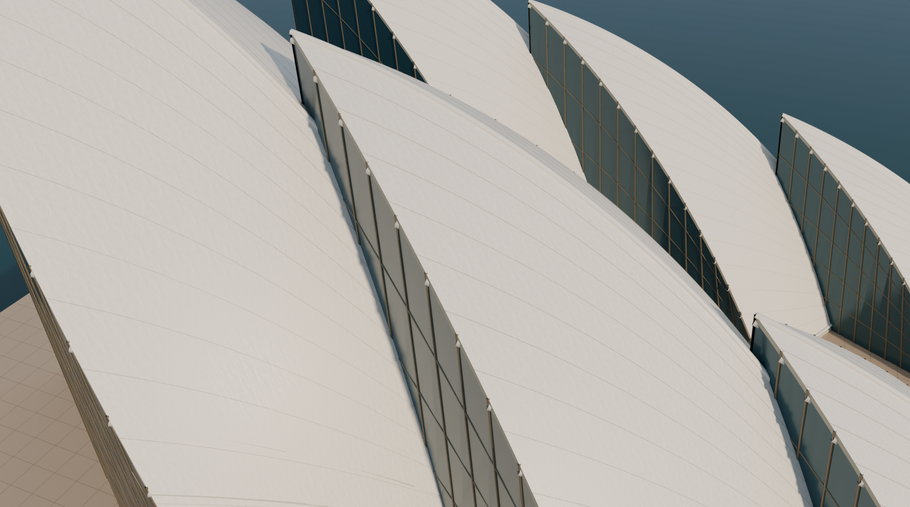
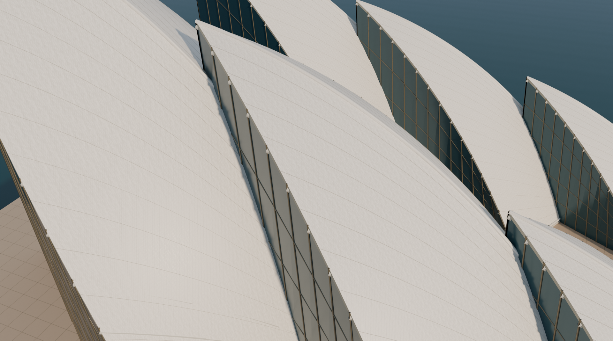
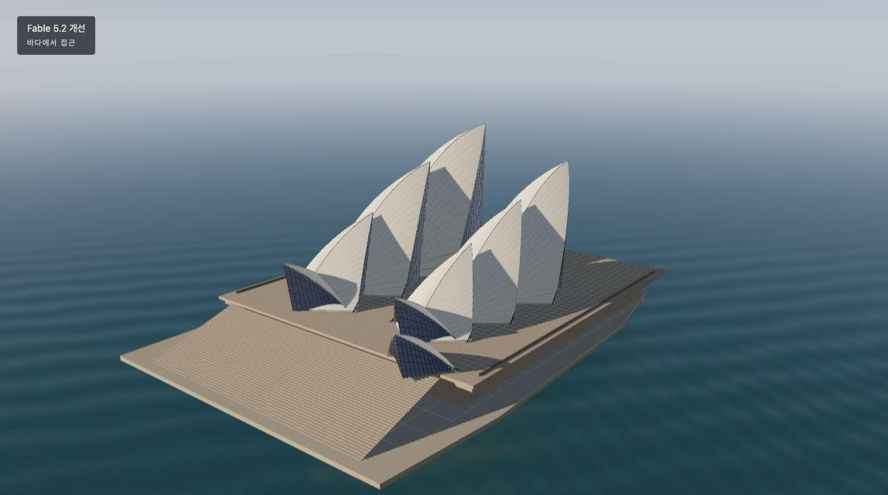
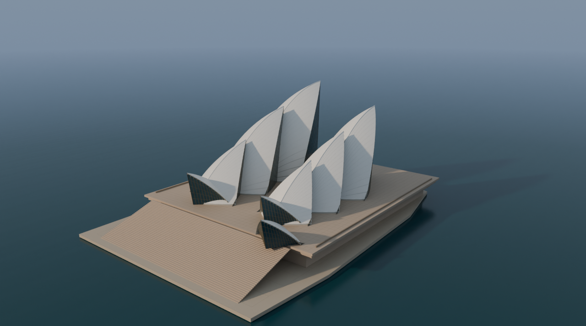

시드니 오페라하우스 · 타일과 수평선 비교
같은 메시와 위치·방향·화각의 카메라를 사용했습니다. 근접 장면은 양쪽 카메라를 동일하게 더 가까이 이동했습니다. 이미지를 선택하면 원본 크기로 볼 수 있습니다.
타일 근접 장면


타일 대비 강조 후보
아래는 같은 카메라에서 줄눈 대비를 인위적으로 높인 검수용 후보입니다. 실제 타일 색상과 다를 수 있으며 확대해도 일부 줄눈은 희미합니다.

하늘과 수평선 · 원거리


복원한 선: 누락됐던 21개 객체의 6,607개 선분을 0.07m 폭의 얇은 띠로 변환했습니다. 원래는 화면상 선이므로 두께는 근사값입니다.
재질과 하늘: 원본 타일 생성 알고리즘으로 색상·높이 이미지를 다시 만들고, 물과 하늘은 Blender 노드로 근사했습니다. 원래 카메라와 태양 방향을 사용하지만 재질, 반사, 빛의 밝기와 수면 파형은 완전히 같지 않습니다. 원본 타일 이미지를 옮겼지만 줄눈은 원본보다 희미해 원본 크기에서도 일부 식별하기 어렵습니다.
비용: 이번 원본 타일·조명·대비 후보 3회 각각 예상 0엔·7 GPU초. 실제 6.87 + 7.12 + 13.08 = 27.07 GPU초, 서비스 보고 청구액 합계 0엔. 모든 작업에 max_yen=0 적용; 최종 정산 상태는 별도입니다.
대화형 장면과 모델은 저장소의 Elapse 예제를 참조하세요.